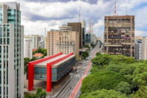
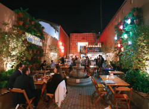

O que eu mais gosto em São Paulo
Passear na Avenida Paulista
Um dos principais centros financeiros da cidade, a avenida Paulista também possui diversas opções de entretenimento. Endereço do Museu de Arte de São Paulo, MASP, do Teatro Gazeta e muitos outros, a região é de fácil acesso graças as diversas linhas de ônibus que cruzam a avenida e a linha de metrô que passa por baixo dela.
A Avenida Paulista sempre é assunto. O que será que estão falando a respeito no Twitter?Os Bares ds Vila Madalena
Depois de um dia de trabalho, nada melhor do que um bom chopp, um petisco e uma conversa em uma mesa de bar. Opções de sobra na região das ruas Aspicuelta, Fradique Coutinho e Wisard.
Veja quais os melhores bares e restaurantes da região Veja São Paulo
O Parque de Ibirapuera

Um dos cartões postais da cidade, o parque dispõe de mais de 1,5 km{^2} de área verde, lagos artificiais e pistas de cooper e ciclismo. E se isso não fosse o suficiente, o parque costuma ser palco de diversos eventos culturais ao longo do ano.
Veja no Como chegar no parque
E existe muitos outros lugares interssantes na cidade...
- O Mercado Municipal
- A Sala São Paulo.
- Os estádios dos principais times de futebol da cidade.
- Diveros museus, como o memorial da América Latina, Museu da Língua Portuguesa e o Museu de Ipiranga
- E mais!